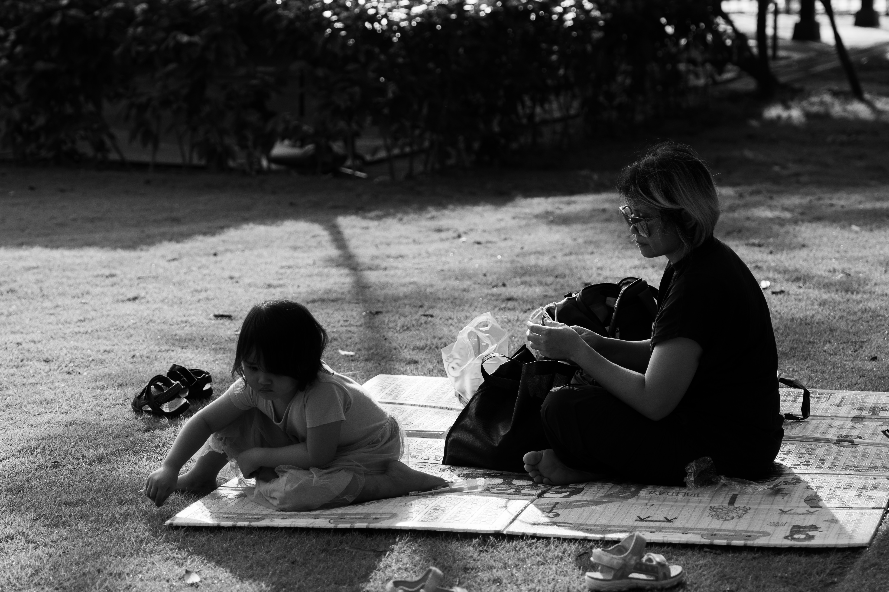

布城：天光云影间的草木长诗
PUTRAJAYA: AN ARBOREAL POEM AMIDST LIGHT AND SHADOW
捕捉自然与生活在宁静中重叠的瞬间。
Capturing the moments where nature and life overlap in tranquility.

- SONY A7R4A
- 24mm
- 1/4000s
- f/2.8
- ISO 100
黑白交织的影调剥离了色彩的喧嚣，只留下林木与湖水在静谧中对谈。行人缓步其间，如墨色点缀在时光的长卷里，定格出一份不被惊扰的平和。
"The interplay of black and white strips away the clamor of color, leaving only the woods and the lake in a silent dialogue. Passersby move slowly, like ink dots on the long scroll of time, capturing a moment of undisturbed peace."
更多视角 / More Perspectives

